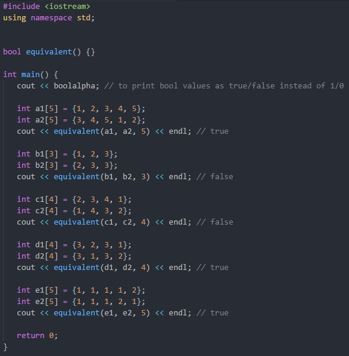

Background
For information on arrays check out: Arrays (CS111) and Pointers
Project
The equivalent function should return true if array a can be shifted (by any amount) such that it is equivalent to array b. If the
shift went past the end of the array, it should loop back to the beginning.
To test for shift equivalency, you should not modify the original arrays. Just compare the appropriate elements without shifting them. Use % to loop around the end of the array.
For example, (i+1) % size would give you the index 1 to the right of i (where size is the number of elements in the array).
Use the following template:

Your job is to fill in the equivalent function.
It might be easier to break down the function into two seperate functions. One function checks if the two arrays are equal if shifted by a specfic amount.
A second function that call the first function for each possible shift amount. If the first function returns true, then the arrays are shift-equivalent.
You can do this in a single function with a nested loop.
Template
Additional info